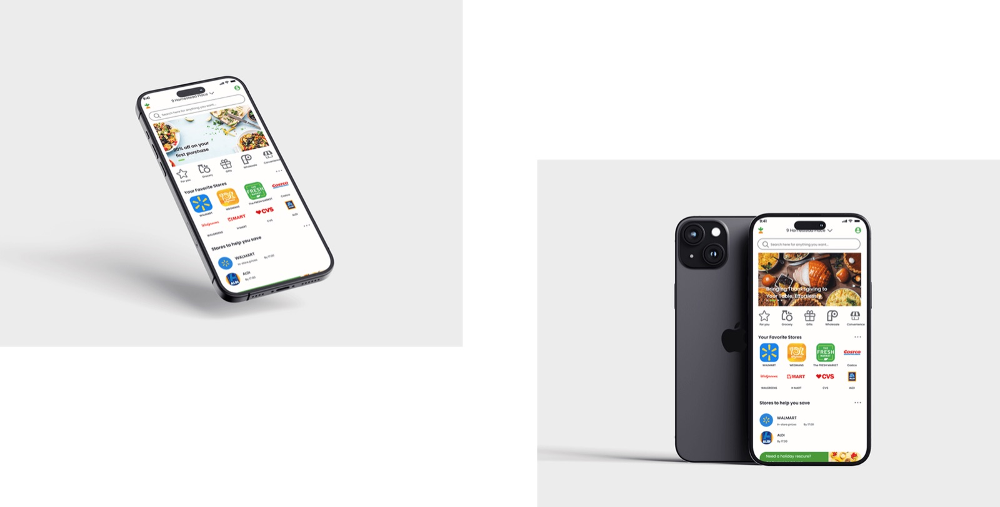
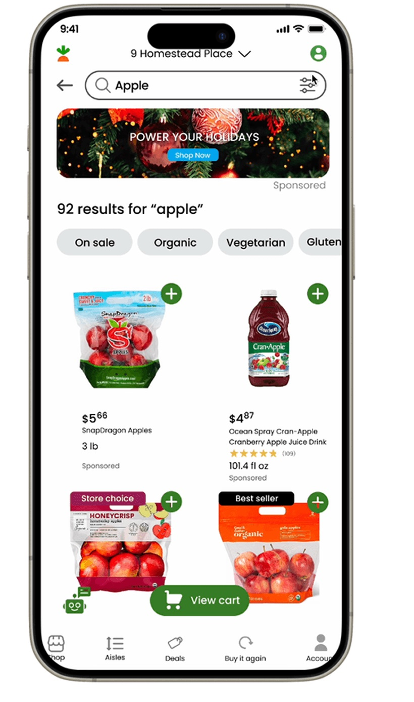
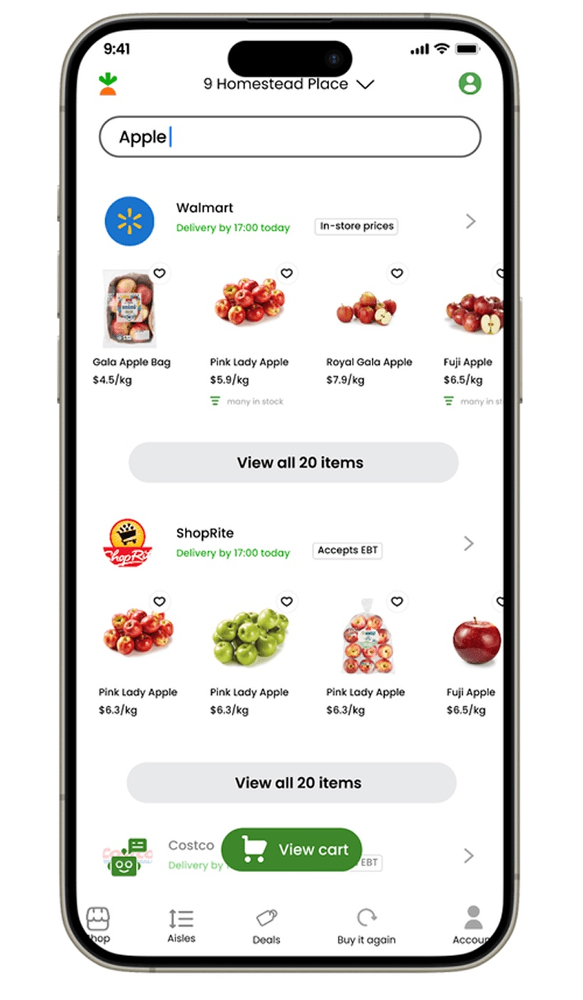

Instacart
The same apple across four stores, in one unit, side by side, with an AI you can just ask. A concept.
- Role · Sole designer
- Year · 2023–24
- Tools · Figma

Brief
Instacart lets you shop eight supermarkets from one couch, but never against each other. $4.5 a kilo here, $5.66 for three pounds there, never side by side.
How might we compare products by price and quality, and recommend from what you like and what you can spend?
Research
The shopping flow, then the branch Instacart does not have: a comparison, by filter or by your own budget.
Three shoppers wanted less than I expected: the numbers next to each other, the unit, and what I like remembered.
Three goals- Easy comparison. Smooth and intuitive, never a spreadsheet.
- Enough information. Precise and sufficient to decide on.
- Bendable options. Comparisons you can shape to your needs.
- Clear price comparisons, more ways to search, add straight from the comparison, and personalisation. Not over-filtering, not stale information.Shopper 1
- Remember my shopping preferences. Show detailed images and descriptions. Give price and quality a score I can read.Shopper 2
- Keep it simple. Show the unit price and a nutrition rating.Shopper 3
Wireframes
Two flows, drawn grey so only the structure argues.
Compare. One new button on the product page, and the sheet it opens.
Ask. A chat in the corner: “some apples, low price” comes back as four cards.
Iterations
Four passes, each answering a thing the tests broke. The second is the one I would keep: every price in one unit.
Same three apples, two ways to read the price- Gala Apple Bag $5.07 1.36 kg bag
- Honeycrisp $4.87 2 lb bag
- Fuji Apple $6.50 loose, per kg
-
Clarity
Filters as a row of chips. Every card lost a line and gained a price you can read at arm’s length.

-
One unit, grouped by store
Every price is also a price per kilo, and results group by store, so this-store-or-that-one happens on one screen.

-
Ask
A sentence instead of a search term. “Cheap apples for a pie” comes back as a card you can add.
-
Compare, side by side
Up to three, lined up: photo, price per kilo, stock, one line each, and an add button under every column.
Outcome
A clickable prototype in Figma: search, filter, compare, ask. A concept, done on my own, not with Instacart.
ReflectionToday the search bar itself would take “cheap apples for a pie” and come back with a comparison, not a list.